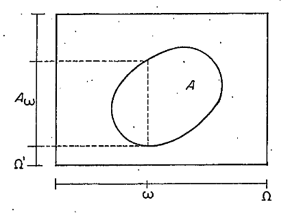
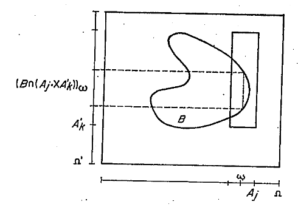

5.2 Medidas-produto - Teorema de Fubini
Sejam \((\Omega, \mathscr{A})\) e \((\Omega', \mathscr{A}')\) dois espaços mensuráveis e \(\mathscr{A} \times \mathscr{A}'\) é a \(\sigma\)-álgebra-produto sobre \(\Omega \times \Omega'\) (que é a \(\sigma\)-álgebra gerada pela semi-álgebra dos “retângulos mensuráveis” \(A \times A'\), onde \(A \in \mathscr{A}\) e \(A' \in \mathscr{A}'\)). Seja \((\Omega \times \Omega', \mathscr{A} \times \mathscr{A}')\) o espaço mensurável-produto.
PROPOSIÇÃO 5.2.1. Seja \(f: \Omega \times \Omega' \to \overline{\mathbb{R}}\) uma função \(\mathscr{A} \times \mathscr{A}'\)-mensurável. Então, para cada \(\omega \in \Omega\), \(f(\omega, \cdot): \Omega' \to \overline{\mathbb{R}}\), dita a seção de f com respeito a \(\omega\), é uma função \(\mathscr{A}'\)-mensurável e para cada \(\omega' \in \Omega'\), \(f(\cdot, \omega'): \Omega \to \overline{\mathbb{R}}\) é \(\mathscr{A}\)-mensurável. Nota. \(f(\omega, \cdot)\) é a função em que \(\omega' \in \Omega'\) toma o valor \(f(\omega, \omega')\).
Demonstração. O problema reduz-se a provar o resultado, no caso em que \(f\) é uma função indicador, porque por linearidade estendemos para as simples, por aproximação monótona crescente com funções simples para as mensuráveis \(\geq 0\), e usando a decomposição \(f = f^+-f^-\) para as mensuráveis. Então, é preciso provar que, se \(f = I_A\), \(A \in \mathscr{A} \times \mathscr{A}'\) e \(\omega \in \Omega\), \(\{\omega' \in \Omega': I_A(\omega, \omega') \leq x\} \in \mathscr{A}'\) para todo \(x \in \mathbb{R}^1\). Como \(I_A\) toma só os valores 0 e 1, o problema recai em mostrar que \(A_\omega\) (chamado seção de A por \(\omega\)) = \(\{\omega' \in \Omega': (\omega, \omega') \in A\} \in \mathscr{A}'\).

TEOREMA 5.2.1. Sejam \((\Omega, \mathscr{A}, \mu)\) e \((\Omega', \mathscr{A}', \gamma)\) dois espaços de medida. Existe sobre \(\mathscr{A} \times \mathscr{A}'\) uma medida \(\nu\), tal que \[\forall A \in \mathscr{A}, \forall A' \in \mathscr{A}' \nu(A \times A') = \mu(A)\gamma(A').\] Se \(\mu\) e \(\gamma\) são \(\sigma\)-finitas, então \(\nu\) é única.
Demonstração.
Consideremos primeiramente o caso em que \(g = I_{A'}\), \(A' \in \mathscr{A}'\) \[\int_{\Omega'} I_{A'} d(\mu f^{-1}) = \mu f^{-1}(A') =\] \[= \mu(f^{-1}(A')) = \int_\Omega I_{f^{-1}(A')} d\mu =\] \[= \int_\Omega (I_{A'} \circ f) d\mu.\] O resultado se segue para funções simples por linearidade. No caso geral, seja \(\{g_n\}\) uma sequência de funções simples, tal que \(0 \leq g_n \uparrow g\). Então \[\int_{\Omega'} gd(\mu f^{-1}) = \lim_{n \to \infty} \int_{\Omega'} g_n d(\mu f^{-1}) =\] \[= \lim_{n \to \infty} \left(\int_\Omega (g_n \circ f) d\mu\right) = \int_\Omega \left(\lim_{n \to \infty} (g_n \circ f)\right) d\mu =\] \[= \int_\Omega g \circ f d\mu,\] sendo que a penúltima igualdade decorre do Teorema da convergência monótona.
Decorre de a) decompondo \(g\) em \(g^+\) e \(g^-\).
Demonstração. Seja \(\mathbb{S} = \{A \times A': A \in \mathscr{A}, A' \in \mathscr{A}'\}\). \(\mathbb{S}\) é semi-álgebra. Vamos provar que \(\nu\) é uma medida sobre \(\mathbb{S}\). É claro que \(\nu \geq 0\) e \(\nu(\varnothing) = 0\). Seja agora \(A \times A' = \sum\limits_{j=1}^\infty (A_j \times A_j')\).
Temos \[I_A(\omega)I_{A'}(\omega') = \sum_{j=1}^\infty I_{A_j}(\omega)I_{A_j'}(\omega').\]
Fixamos \(\omega\) e integramos em relação a \(\gamma\) em \(\omega'\). Por convergência monótona temos \[I_A(\omega)\gamma(A') = \sum_{j=1}^\infty I_{A_j}(\omega)\gamma(A_j').\]
Integramos agora com respeito a \(\mu\) em \(\omega\) e utilizamos novamente o teorema da convergência monótona. \[\mu(A)\gamma(A') = \sum_{j=1}^\infty \mu(A_j)\gamma(A_j'),\] ou seja, \[\nu(A \times A') = \sum\limits_{j=1}^\infty \nu(A_j \times A_j').\] Portanto \(\nu\) é uma medida sobre \(\mathbb{S}\) e pelo Teorema de Extensão pode ser estendida a uma medida sobre \(\mathscr{A} \times \mathscr{A}'\). Se \(\mu\) e \(\gamma\) são \(\sigma\)-finitas, \(\nu\) é \(\sigma\)-finita sobre \(\mathbb{S}\) e portanto a extensão é única, o que prova a unicidade de \(\nu\).
Nota. \(\nu\) é chamada medida-produto de \(\mu\) e \(\gamma\) e é denotada por \(\mu \times \gamma\).
PROPOSIÇÃO 5.2.2. Sejam \((\Omega, \mathscr{A}, \mu)\) e \((\Omega', \mathscr{A}', \gamma)\) dois espaços de medida \(\sigma\)-finita, então, \(\forall B \in \mathscr{A} \times \mathscr{A}'\), as funções \(\omega \mapsto \gamma(B_\omega)\) e \(\omega' \mapsto \mu(B_{\omega'})\) são \(\mathscr{A}\) e \(\mathscr{A}'\) mensuráveis respectivamente e \[(\mu \times \gamma)(B) = \int_\Omega \gamma(B_\omega) \mu(d\omega) = \int_{\Omega'} \mu(B_{\omega'}) \gamma(d\omega').\]
Demonstração. Vamos provar só a primeira igualdade. Seja \(\{A_j\}_{j=1,2,\ldots}\) (resp. \(\{A_j'\}_{j=1,2,\ldots}\)) uma família de subconjuntos disjuntos de \(\Omega\) (resp. de \(\Omega'\)), tais que \(\sum\limits_{j=1}^\infty A_j = \Omega\) e \(\mu(A_j) < \infty\) (resp. \(\sum\limits_{j=1}^\infty A_j' = \Omega'\), \(\gamma(A_j') < \infty\)). Pelo Teorema da Convergência Monotônica é suficiente provar que, para cada \(j\) e \(k\) fixos, \(\omega \mapsto \gamma(B_\omega \cap A_k')\) e \(\mathscr{A}\)-mensurável e \[(\mu \times \gamma)(B \cap (A_j \times A_k')) = \int_{A_j} \gamma(B_\omega \cap A_k') \mu(d\omega).\]

Seja \(\mathbb{H}\) a classe do conjunto de \(\mathscr{A} \times \mathscr{A}'\), tais que essas duas propriedades sejam verdadeiras. Como \(\mathbb{S} \subseteq \mathbb{H}\), se provarmos que \(\mathbb{H}\) é uma classe \(\sigma\)-aditiva, teremos que \(\mathbb{H} \supseteq \mathscr{A} \times \mathscr{A}'\) e o resultado ficará provado. Vamos verificar só que \(\mathbb{H}\) é fechada em relação à diferença própria. Sejam \(B \in \mathbb{H}, C \in \mathbb{H}\), e \(B \supseteq C\): \[\gamma((B-C)_\omega \cap A_k') = \gamma((B_\omega \cap A_k')-(C_\omega \cap A_k')] =\] \[= \gamma(B_\omega \cap A_k') - \gamma(C_\omega \cap A_k').\] Esta última igualdade usa o fato \(\gamma(A_k') < \infty\), e prova que a função \(\omega \to \gamma((B-C)_\omega \cap A_k')\) é \(\mathscr{A}\)-mensurável.
Como as funções \(I_{A_j}(\omega)\gamma(B_\omega \cap A_k')\) e \(I_{A_j}(\omega)\gamma(C_\omega \cap A_k')\) são \(\mu\)-integráveis, temos \[\int_{A_j} \gamma((B-C)_\omega \cap A_k')\mu(d\omega) = \] \[= \int_{A_j} \gamma(B_\omega \cap A_k')\mu(d\omega) - \int_{A_j} \gamma(C_\omega \cap A_k')\mu(d\omega) = \] \[= (\mu \times \gamma)(B \cap (A_j \times A_k')) - (\mu \times \gamma)(C \cap (A_j \times A_k')) = \] \[= (\mu \times \gamma)((B-C) \cap (A_j \times A_k')),\] provando que \(\mathbb{H}\) é fechada em relação à diferença.
A expressão “em quase todo ponto” (q. t. p.) dependerá da medida em consideração; quando for necessário tornar explícita essa dependência, escreveremos q. t. p. \([\mu]\).
TEOREMA 5.2.2 (Fubini). Sejam \((\Omega, \mathscr{A}, \mu)\) e \((\Omega', \mathscr{A}', \gamma)\) dois espaços de medida \(\sigma\)-finita e \(\nu = \mu \times \gamma\).
Se \(f: \Omega \times \Omega' \to \overline{\mathbb{R}}\) é uma função \(\mathscr{A} \times \mathscr{A}'\)-mensurável e não-negativa, então as funções \(\omega \mapsto \int_{\Omega'} f(\omega, \cdot) d\gamma\) e \(\omega' \mapsto \int_\Omega f(\cdot, \omega') d\mu\) são \(\mathscr{A}\) e \(\mathscr{A}'\) mensuráveis respectivamente e \[\int_\Omega \left[\int_{\Omega'} f(\omega, \cdot) d\gamma\right] d\mu = \int_{\Omega'} \left[\int_\Omega f(\cdot, \omega') d\mu\right] d\gamma = \int_{\Omega \times \Omega'} f d\nu.\] A conclusão da parte a) é usualmente conhecida como Teorema de Tonelli.
Se \(f\) é \(\nu\)-integrável, então \(f(\omega, \cdot)\) é \(\gamma\)-integrável para quase todo \(\omega[\mu]\). e \(f(\cdot, \omega')\) é \(\mu\)-integrável para quase todo \(\omega'[\gamma]\). \[\int_\Omega \left[\int_{\Omega'} f(\omega, \cdot) d\gamma\right] d\mu = \int_{\Omega'} \left[\int_\Omega f(\cdot, \omega') d\mu\right] d\gamma = \int_{\Omega \times \Omega'} f d\nu.\]
Demonstração. a) A Prop. 5.2.2 afirma a validez de a) para \(f\) indicador de um conjunto de \(\mathscr{A} \times \mathscr{A}'\). Por linearidade a) é válida para funções simples não-negativas e pelo Teorema da Convergência Monotônica para funções não-negativas \(\mathscr{A} \times \mathscr{A}'\)-mensuráveis.
- Como \(\int_{\Omega \times \Omega'} |f| d\nu < \infty\), resulta que \[\int_\Omega \left[\int_{\Omega'} |f(\omega, \cdot)| d\gamma\right] d\mu = \int_{\Omega'} \left[\int_\Omega |f(\cdot, \omega')| d\mu\right] d\gamma < \infty\] e portanto \[\int_{\Omega'} |f(\omega, \cdot)| d\gamma \text{ é finita q. t. p. } [\mu]\] e \[\int_\Omega |f(\cdot, \omega')| d\mu \text{ é finita q. t. p. } [\gamma]\] Aplicando o Teorema de Tonelli (parte a)) a \(f^+\) e \(f^-\), e efetuando às correspondentes diferenças, resulta o teorema.